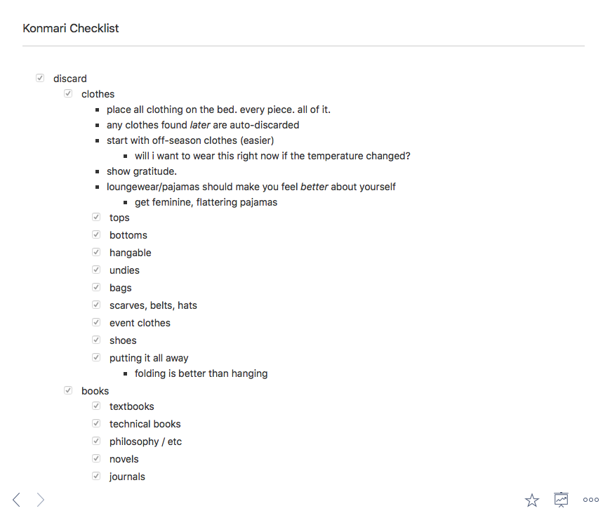
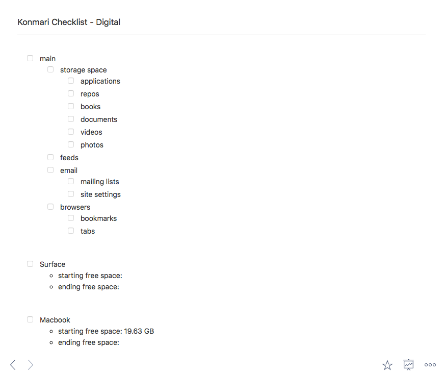

The final step of my Konmari journey is here: digital stuff! Digital belongings, of course, work a bit differently from tangible ones, but I think the general principles of Konmari will apply quite well, and I think that digital “clutter” can be as harmful as the traditional type.
So, how do we go about this? Well, for my tangible possessions, I made a checklist in Quiver to keep myself on track:

my konmari checklist
So, it made sense to do the same for digital stuff. I created a “main checklist” with the categories of items to discard, along with separate lists per-computer and per-service, like this:

my digital checklist
As with traditional Konmari, I tried to order the categories by difficulty-of-pruning. Applications come first because I use many free ones, which will be easily replaceable should I discard one prematurely. Additionally, I documented the free space on my machines and storage services before I started—numbers are satisfying!
My Surface is much more cluttered than my Macbook, so I used WinDirStat to help along the way. I also used bash extensively for categories like “documents” and “photos”, where file extensions are helpful and directory structure is’t as important: mv foo/bar/*.png Desktop/Konmari/Photos and such. Here’s how things went, and what I learned along the way:
The Process
Applications
On my Macbook, this was quick and painless—most removed programs were both redundant and free, and had been installed while trying to find a good utility. Gif-making software I didn’t use, game engines I was trying out (and, generally, found to be more trouble than they're worth for a CLI enthusiast like me), etc. Some preinstalled apps can’t be removed, such as Chess and DVD Player. My Macbook doesn’t even have a disk drive!
On my Surface, some effort was required: I've installed lots of stuff since 2015:
- Emulators that crashed all the time.
- Blizzard’s excuse for a remastered Starcraft: Brood War.
- Buildbox, Stencyl, Unity, & XNA.
- Redundant versions of Visual Studio.
- A Visual Studio extension for COBOL, which I used exactly once, for a school assignment.
- LEGO Digital Designer, which was discontinued before I installed it!
- A program for loading WAVs onto musical greeting cards from a specific company—which doesn’t work in Windows 10.
- Several paint programs I no longer use after being seduced by Krita.
Just loads of stuff.
Code
Most of my (recent) programming work lives in Dropbox, so this was a win across devices. I ditched repos I have starred on Github that I'm not working with lately (sorting by Last Modified is very helpful!)
The Surface, however, had C:/Projects/, which over the years had become filled to bursting with cruft. I broke the rules here: I didn’t want to wait for 100,000+ items to be moved into a code/ directory before going through them. Instead, I moved items I decided to keep into my new code/, and removed the others. WinDirStat helped me identify stray audio files, .git directories, and project duplicates.
Documents
Moving all PDFs and all text files into one directory was more useful than expected. Suddenly, it was very clear how many redundant copies I had. I sorted the view by file size, ensuring that I didn’t mess up the order by opening and renaming kept items. Then, important documents were renamed as I went: YYYY-MM-foo-bar.pdf
Videos
There were less than I thought, it turns out. Many captures of projects were tossed, and only the best of them kept. Files were renamed like this: pq93-edit-gfx.mp4 so everything can be sorted by name.
Photos
Photos were, by far, the most difficult files to deal with, and not because they are sentimental, but because of the sheer volume. I take way too many photos with my phone, most of them redundant or for one-time use in Messenger or Discord. It took ages so sort and cull my photos. I need to be more conservative with my phone camera so that this doesn’t happen again.
Feeds
Facebook was a piece of cake, as I made a new one fairly recently, and only added a few friends and pages. Still, I regularly find myself needing to take breaks from it to avoid overwhelm—the Kavanaugh stuff filled my feed for weeks—so I did take inventory and remove most of the pages, and I bumped most friends down to “important posts”.
I followed 596 Twitter accounts—that’s a lot! And I followed most of them because I really enjoy their tweets. However, it’s rare that I see any tweets from specific accounts, because of the sheer number of tweets available. So, I unfollowed some by these rules:
- company or product accounts
- youtubers that youtube already notifies me about
- bots that don’t “spark joy” any more
- "stressful" accounts
- bands I follow elsewhere
Two passes over the list brought the count down to 482, which isn’t great, but is progress.
Clicked “unsubscribe” in countless spam emails. Amazon & Walmart are particularly bad at respecting your email preferences. Steam sale? Don’t care. LinkedIn? No one ever cares unless it’s a direct message. I don’t care about so-and-so’s work anniversary and neither do they. I don’t care if someone shared an article. I don’t care that I have a “suggested connection” for some douche I've said “no” to at least five times already.
Also, I had accumulated a vast pile of flagged emails, many of them over a year old. At the end, I only had two flagged messages left: one for next year’s FAFSA, and one from an Indeed recruiter.
Browsers
In Safari, I had several hundred unsorted bookmarks. I went through them, one by one—most would have been better suited to the Reading List when I originally found them, but now were simply deleted. Some items were confusing: a list of cheeses on Wikipedia, for example. Some links were broken, too. At the end, 8 bookmarks remained, most related to a current project.
One perk of using a seven year old MacBook Air is that I can’t get away with lots of tabs. It’s impossible to accumulate them, because modern web pages can scarcely work with a “mere” 2GB RAM and an old i5, even with a decent browser.
In contrast, Vivaldi had 2 persistent windows with about 20 tabs between them! In keeping with this, I had a massive collection of bookmarks there, too, some even organized into subfolders with tens of items. Why have I bookmarked so many sites that I can remember offhand? The entire point of bookmarks is to find your way back to something.
On my first pass through, I deleted 438 of the bookmarks and removed all of the folders. I created a new folder, called “Reading List”, where I placed items I wanted to read before deleting them. Work bookmarks also got a folder. All told, I kept 63 bookmarks.
Cache / Logs
All the “classic” utilities for this cost money now. MacClean used to be a free alternative to CleanMyMac—now it’s $20 per year, which, while inexpensive, is unjustifiable right now. On the Surface end of it, CCleaner also costs money these days. What to do?
I could manually clean up caches and logs, or write a script to do it. But what if I delete the wrong thing? How can I tell what’s safe to ditch? It’s going to be a “no” from me, dog. A quick search of the App Store found Disk Cleaner, a highly-rated cache buster, on sale for $3. Nice. As for Windows, I quickly found BleachBit, which remains FOSS.
External Storage
I have a 1TB ADATA external HDD, which since its purchase, had become a complete wreck. When my Surface had more games on it, like Skyrim and Borderlands 2, space was scant, and my solution at the time was to pile seldom-to-never-used files into the ADATA. Bitlocker'd, too, to keep my miscellaneous and completely unimportant files annoyingly secure.
Unlabeled recorded phone calls of someone no longer in my life, threatening violence (legal to do in Virginia, by the way). ~65GB of tv series, which I can readily access on Netflix any time and have already watched. A massive archive of all the data from my previous Facebook profile. ~15GB of sound effects I used a few of, one time, for a project. Old Unity projects. More photos.
The Results
| place | free before | free now |
|---|---|---|
| macbook | 19.63 GB | 20.15 GB |
| surface | 35.90 GB | 91.90 GB |
| external | 599.00 GB | 801.60 GB |
| dropbox | 661.50 MB | 823.30 MB |
| iCloud | (unsure) | 35.78 GB |
| google drive | 1.50 GB | 1.50 GB |
Altogether, the Macbook was done in about a half hour, and most of my time was spent on the Surface and storage services, where I needed to do a proper Konmari, by putting items into central directories to go through them. My files are organized, my machines are cleaner, and I no longer feel nauseated when I need to find my tax returns or syllabi.
Going into Konmari for a second time, with a better mindset, and mentally prepared to put in the necessary work, I had much better results than before. I finally feel at peace in my space, and when using my computers. I highly recommend The Life Changing Magic of Tidying Up to anyone sensitive to their environment, who finds themselves struggling with clutter and overwhelm.
Thank you for reading, and see you next time. :)